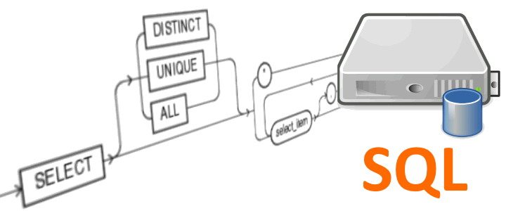

GESTOR DE BD MySQL
 MySQL es un sistema de administración de bases de datos (Database Management System, DBMS) para bases de datos relacionales. Así, MySQL no es más que una aplicación que permite gestionar archivos llamados de bases de datos. Existen muchos tipos de bases de datos, desde un simple archivo hasta sistemas relacionales orientados a objetos. MySQL, como base de datos relacional, utiliza multiples tablas para almacenar y organizar la información. MySQL fue escrito en C y C++ y destaca por su gran adaptación a diferentes entornos de desarrollo, permitiendo su interactuación con los lenguajes de programación más utilizados como PHP, Perl y Java y su integración en distintos sistemas operativos.